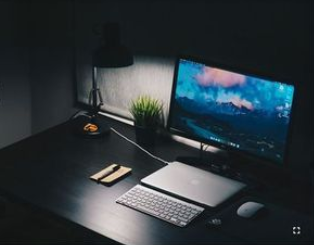

DevGlimpse: Unveiling a World of Web Development and Programming Excellence
Welcome to DevGlimpse, where the world of web development and programming comes to life through a dynamic exhibition of competence and accomplishments. As you step into this meticulously crafted digital realm, you'll embark on a journey through my expertise and imaginative prowess, gaining a comprehensive perspective of my proficiencies.
Why DevGlimpse?
DevGlimpse isn't just a website; it's a vibrant showcase of diverse web development and programming projects. Whether you're a potential employer seeking a skilled developer, a client in need of programming services, or a fellow developer searching for inspiration and collaboration, this platform caters to you. As a student or aspiring developer, you'll find a wealth of educational materials, coding tips, and insights to bolster your learning journey.
The Journey of Efe:
Allow me to introduce myself. I'm Efe, a passionate student based in Lagos, Nigeria, on an exhilarating journey to master the world of web development and programming. My journey began during my studies, where I discovered the exhilaration of creating something out of nothing. Python, with its simplicity and versatility, captured my interest, fueling my passion further.
What to Expect:
As you navigate through DevGlimpse, you'll find a treasure trove of valuable resources:
Project Showcase: Immerse yourself in a diverse array of web development and programming projects. From innovative web applications to coding experiments, each project reflects the depth and excellence of my creations.
Learning Hub: For students and aspiring developers, DevGlimpse offers a rich repository of educational materials, tutorials, and coding insights. Here, you'll find the support and inspiration you need to flourish in your learning journey.
Tech Talent Hub: For recruitment agencies and industry professionals, DevGlimpse serves as a valuable platform for identifying tech talent and staying connected within the industry. Discover dedicated and innovative developers ready to contribute to your projects.
Why Choose DevGlimpse?
DevGlimpse stands out as a hub for several reasons: